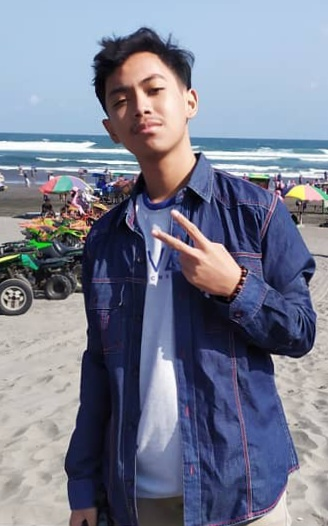

Tentangaku.com
Perkenalan
Hai Teman-teman, perkenalkan namaku adalah Marsa nabil hawari, Aku
adalah salah satu murid dari SMKN2 Buduran dari jurusan
RPL atau dari kepanjangan
(Rekayasa Perangkat Lunak).
Aku lahir di kota Sidoarjo pada tanggal 28-Maret2003, rumah ku
berada di perumahan BSI
(Bumi Suko Indah) yang terletak di desa Suko.